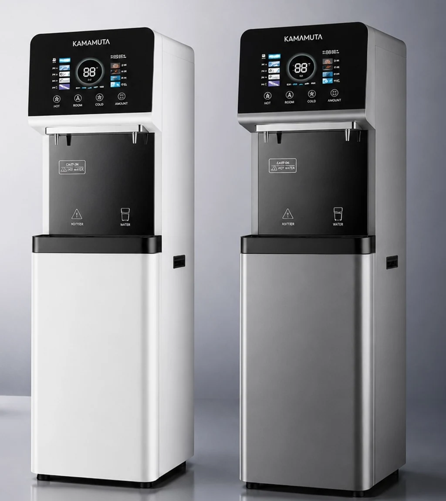

Water Dispenser Manufacturer for private-label sourcing teams · 600 · RO
मूल्य प्रस्ताव मांगने से पहले जोड़ और परियोजना की आवश्यकताओं की पुष्टि करें।
संपर्कमूल्य प्रस्ताव मांगने से पहले जोड़ और परियोजना की आवश्यकताओं की पुष्टि करें।

मूल्य प्रस्ताव मांगने से पहले जोड़ और परियोजना की आवश्यकताओं की पुष्टि करें।
संपर्क